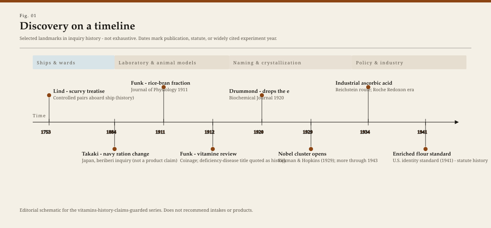
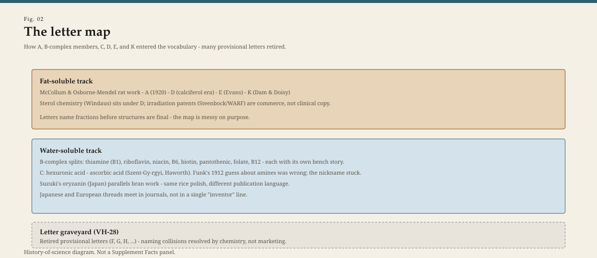
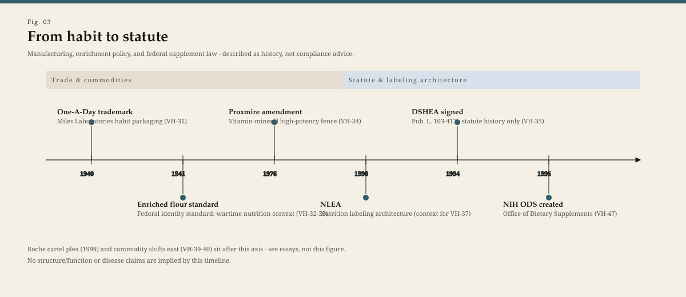
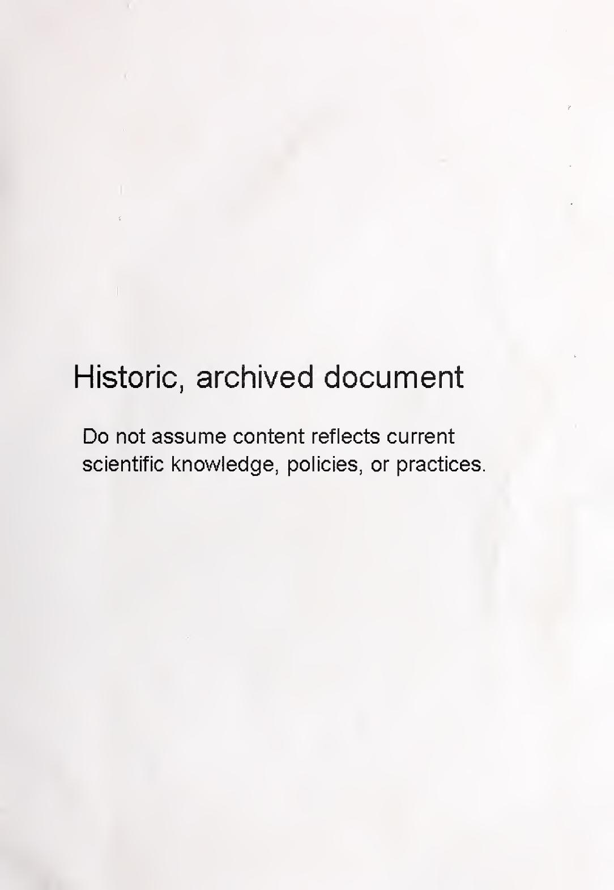
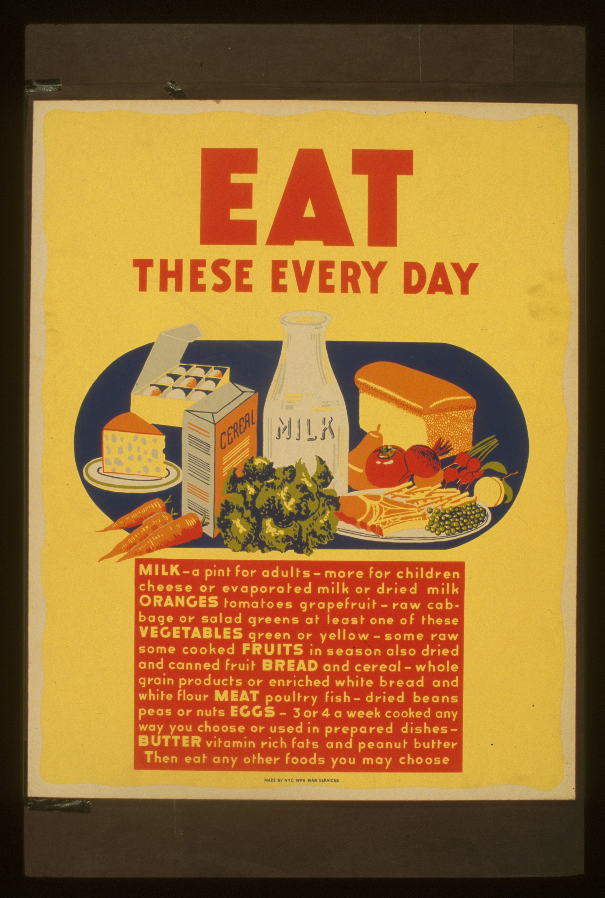

Vitamins history — staged figures (claims-guarded)
Local preview for PR review. Captions are history-only. See RIGHTS.md.

Fig. 1. Discovery timeline (SVG).

Fig. 2. Letter map (SVG).

Fig. 3. Commerce & statute (SVG).
Casimir Funk. PD portrait.

USDA 1941 pamphlet cover. Enrichment policy document.

LOC poster. Wartime nutrition education.